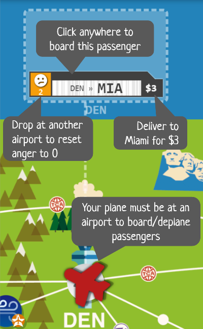
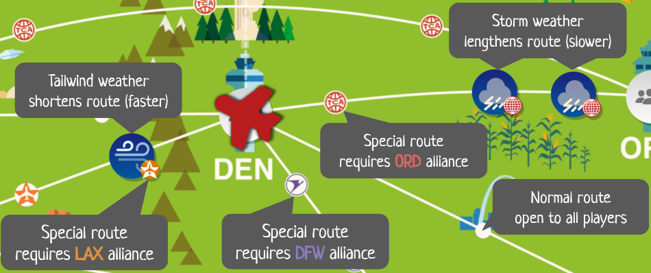
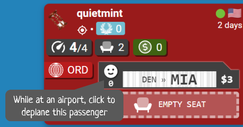

Now Boarding
Board Game Arena 官方规则文档
Quick Help
🔊 Real-time and audio recommended. This highly-interactive game benefits from a voice call. BGA Premium members can start audio from the table.
😡 Account issue? Contact Board Game Arena support regarding ELO, karma, penalties, reputation, etc.
🪲 Other game issue? View and report bugs in Now Boarding.
How To Play
Now Boarding is a co-operative, simultaneous-play game in which you work together to fly a fleet of airplanes. All players take actions at the same time in this chaotic and clever twist on pick-up-and-deliver. Coordinate your efforts to transport passengers, improve your planes, and access new flight paths so you can deliver everyone to their destination by the end of the day. But watch out for stormy weather and flaring tempers! Will three passenger complaints will put your airline out of business, or will your team be a soaring success?
Setup
• Each player chooses a different starting airport and alliance. In two-player games, you also choose an additional alliance.
• Each player chooses a starting upgrade. Your plane starts with 1 seat + 3 speed, so you'll end up with either 1 seat + 4 speed or 2 seats + 3 speed, depending which upgrade you choose.
• Each player receives a passenger in their starting airport.
Maintenance Phase
The game has three stages (morning, afternoon, evening) each with a Maintenance Phase and a Flight Phase.
New Stage & Weather
A number of weather tokens are added to the map at the beginning of each stage (depending on player count). Tailwinds and storms affect the fuel cost during Flight Phase > Move (described below).
| Players | Weather |
|---|---|
| 2 | 1 tailwind and 1 storm |
| 3 | 2 tailwinds and 2 storms |
| 4 | 3 tailwinds and 3 storms |
| 5 | 3 tailwinds and 3 storms |
New Passengers
A number of new passengers arrive at airports each round (depending on player count and stage). Players decide together how to best serve the passengers. The destinations for new passengers aren't revealed until the flight phase, so you'll always be working with imperfect information.
| Players | Morning | Afternoon | Evening |
|---|---|---|---|
| 2 | 1 passenger × 3 rounds | 2 passengers × 5 rounds | 3 passengers × 9 rounds |
| 3 | 2 passengers × 3 rounds | 3 passengers × 5 rounds | 4 passengers × 8 rounds |
| 4 | 3 passengers × 4 rounds | 4 passengers × 5 rounds | 5 passengers × 7 rounds |
| 5 | 4 passengers × 3 rounds | 5 passengers × 6 rounds | 6 passengers × 4 rounds |
Purchase Upgrades
If you have enough cash, you can purchase upgrades for your plane. You can buy additional alliances to unlock more movement options, additional seats to carry more passengers, and additional speed to travel farther on each turn.
No change is given when paying for purchases, so you may need to consider whether it's worth overpaying for something now or waiting until you collect more cash and have exact change.
| Upgrade | Cost |
|---|---|
| Alliance (travel on special routes) | $7 |
| Seat 2 | $5 |
| Seat 3 | $9 |
| Seat 4 | $13 |
| Seat 5 | $17 |
| Speed 4 | $5 |
| Speed 5 | $7 |
| Speed 6 | $9 |
| Speed 7 | $11 |
| Speed 8 | $13 |
| Speed 9 | $15 |
| Temporary Seat (board an extra passenger once) | $2 |
| Temporary Speed (move an extra space once) | $1 |
The Temporary Seat and Temporary Speed upgrades are each exclusive and one-time use. Only one copy of each temporary item exists at a time and it becomes available for purchase again after use. For example, if the red player purchases the Temporary Seat then no other player can purchase it until the red player uses it to board a passenger. Temporary items are used automatically after exhausting your normal speed/seats. You cannot choose to use temporary items "early" or to discard them, so don't purchase temporary items unless you're planning to use them in the upcoming round.
Flight Phase
During the Flight Phase, a timer begins and the destinations for new passengers are revealed. Players take actions simultaneously until time is up! You can take multiple actions in any order.
Pick Up Passengers
While your plane is on an airport space and has empty seats, you can pick up passengers from that airport. Simply click on a passenger to board them.
Tip: You can board passengers directly from other planes at your same airport, too.

Move
You can move as many space as your plane's speed. The map shows all your possible moves with the corresponding fuel cost. Simply click on a numbered space to move your plane. Each move costs 1 fuel, except for spaces with tailwinds cost 0 (= faster travel). Moving through a storm also costs 1 fuel, but the storm creates an additional space along the route (= slower travel).
You can't move on special route spaces (the map dots with logos) unless you've joined the corresponding alliance.

Drop Off Passengers
While your plane is on an airport space, you can drop off passengers. Simply click on a passenger to deplane them.
• If you delivered the passenger to their destination, they disappear and add to your cash pile. You can spend cash during the Maintenance Phase > Purchase Upgrades (described above).
• Otherwise, the passenger remains in the airport and waits for a flight to their destination. All the passenger's anger will be erased (the passenger is happy to be on their way somewhere) unless you returned the passenger to the same airport where they boarded your plane (the passenger isn't fooled in that case).

Time's Up!
For real-time games, the duration of the Flight Phase is strictly enforced! Once the time is up, the Flight Phase will automatically end and you will forfeit any remaining move/actions. The time limit is an important aspect of the decision making in this game, but game options are available while creating your table if you wish to extend or turn off the timer. (Turn-based games also do not have the timer).
Anger and Complaints
When the Flight Phase ends, 1 anger is added to every passenger waiting in an airport. If a passenger would ever receive 4 anger, they leave and file a complaint. If you ever receive 3 complaints, your airline goes out of business and you lose the game.
Final Round
During the final round, the weather remains unchanged and no new passengers are added during the Maintenance Phase. After the final Flight Phase (including the final Anger and Complaints step), 1 complaint is added for every 2 remaining passengers. Assuming no other complaints during the game, this means you must deliver all but 5 passengers.
If you still have fewer than 3 complaints, your team wins the game!
VIP Variant
This variant increases the difficulty by designating a number of passengers (depending on player count) as VIPs with complications like "must board first" or "must fly alone".
The VIPs are randomly distributed across each stage (morning, afternoon, evening). During the Maintenance Phase, players decide together whether to accept a VIP. If you accept a VIP, one of the new passengers will randomly be designated as a VIP (revealed at the start of the Flight Phase). You can't accept more than 1 VIP per round. When each stage ends, any VIPs you did not accept immediately file complaints. Try to accept VIPs when things are going well, but don't wait too long and leave VIPs unserved.
| Players | VIPs |
|---|---|
| 2 | 4 VIPs |
| 3 | 5 VIPs |
| 4 | 6 VIPs |
| 5 | 7 VIPs |
Normal VIPs
The physical game includes the following VIPs:
| Complication | Description | Morning | Afternoon | Evening |
|---|---|---|---|---|
| Captured Fugitive | Requires 2 seats | ✅ | ||
| Celebrity | Must fly alone | ✅ | ||
| Crying Baby | Other passengers (without a crying baby) at their airport gain 2 anger per turn. If multiple exist at the same airport, they do not stack. | ✅ | ✅ | |
| Direct Flight | Only deplanes at their destination | ✅ | ||
| First In Line | Must board before other passengers at their airport. If multiple exist at the same airport, they can board in any order. | ✅ | ||
| Grumpy | Starts at 1 anger | ✅ | ||
| Impatient | Anger never resets | ✅ | ||
| Nervous | Cannot fly through storms or tailwinds | ✅ |
BGA Community VIPs
As an unofficial expansion, the following VIPs suggested by the BGA player community are available via a game option. Join the discussion and suggest your own ideas in the Now Boarding forums!
| Complication | Description | Morning | Afternoon | Evening |
|---|---|---|---|---|
| Convention | All new passengers have the same destination | ✅ | ||
| Crewmember | Pays nothing but never gains anger | ✅ | ✅ | |
| Discount Ticket | Pays a lower fare (50% rounded down) | ✅ | ||
| Late Connection | Boarding consumes 1 speed | ✅ | ✅ | |
| Last In Line | Must board after other passengers at their airport. If multiple exist at the same airport, they can board in any order. | ✅ | ||
| Loyalist | Only flies on planes in the specified alliance | ✅ | ✅ | |
| Mystery Shopper | Destination remains secret until boarding | ✅ | ✅ | |
| Round-Trip Ticket | Pays nothing the first delivery, then reappears for the reverse trip and pays double | ✅ | ✅ | |
| Reunion | Two passengers must meet at their destination. The player who delivers the final passenger earns both fares. | ✅ | ||
| Storm Chaser | Must fly through a storm (a tailwind does not count) | ✅ | ||
| Wind Glider | Must fly through a tailwind (a storm does not count) | ✅ |
ELO calculation
Co-op games do not follow the ELO ranking described in the BGA FAQs. Instead, Now Boarding and most other co-op games compute your new ELO ranking as previous ELO + final score. Since Now Boarding doesn't have any kind of scoring system in the game rules, the final score is determined as follows:
• Lose: Final score is 0 (no ELO decrease).
• Win: Final score depends on the number of players and the timer game option:
| Players | Win with normal timer | Win with no/double timer |
|---|---|---|
| 2 | 14 | 7 |
| 3 | 16 | 8 |
| 4 | 20 | 10 |
| 5 | 24 | 12 |
Differences from the Physical Game
If you've played this board game in real life, note that minor rules changes have been incorporated in the BGA adaption.
• To provide flexibility for misclicks, passenger anger clears when deplaning at a new airport (instead of when boarding). This allows you to return a passenger to the same airport where they boarded, but of course anger won't clear in that case.